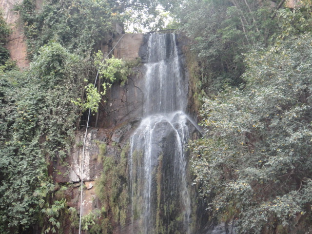
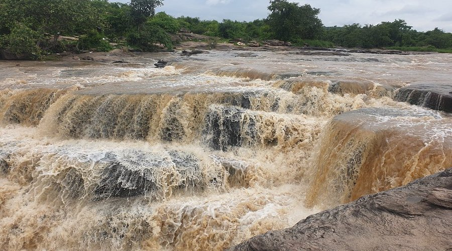
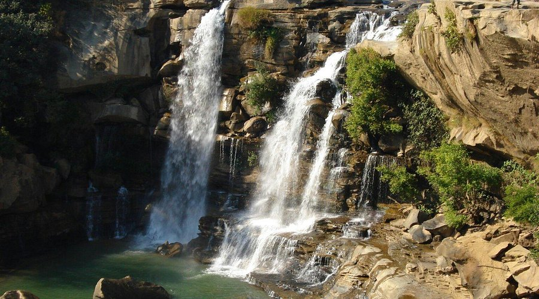
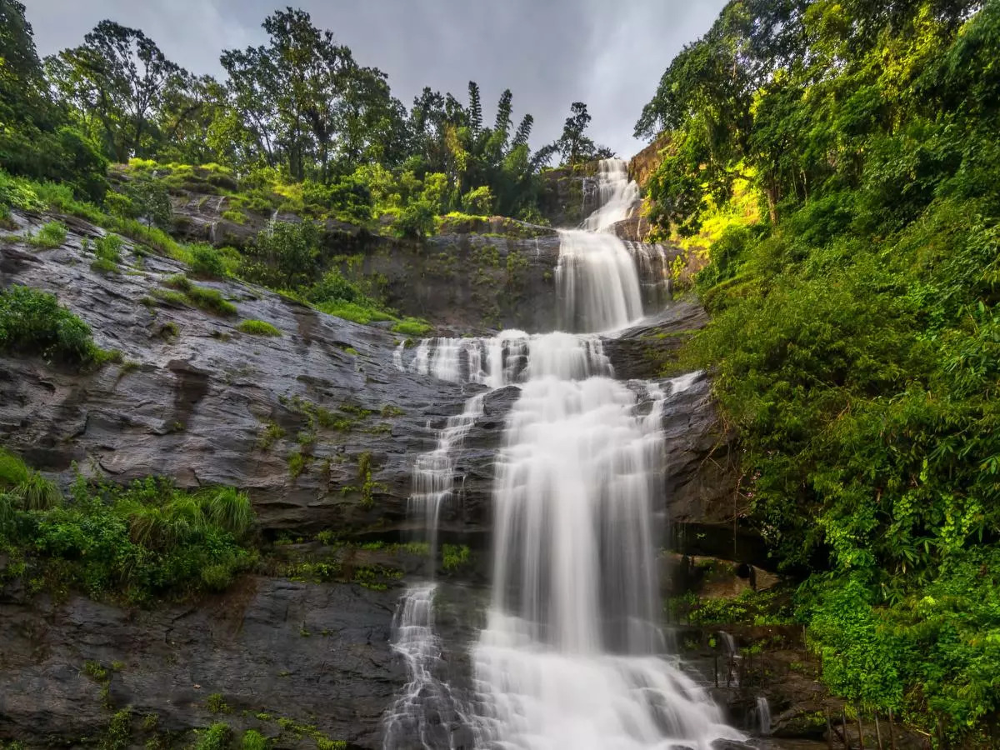
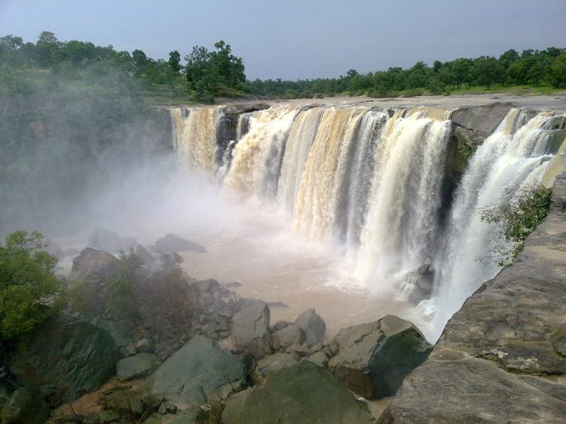

Kakolat Waterfall
Kakolat Waterfalls is a stunning natural attraction located in the Nawada district of Bihar, India. Nestled amidst lush green forests, the waterfall is a popular tourist destination and is considered one of the most beautiful waterfalls in the region.Height and Beauty: The waterfall cascades from a height of about 150–160 feet, creating a picturesque scene. It is a great destination for a day trip from nearby cities like Patna and Gaya.

Dhuan Kund
Dhua Kund, located in the Sasaram region of Bihar, is a captivating natural site and a popular tourist destination.Dhua Kund is closely linked with the legacy of Sher Shah Suri, the renowned ruler of the Sur Empire. Dhua Kund consists of two parallel waterfalls that originate from the same stream. These waterfalls cascade from a considerable height, creating a mesmerizing spectacle.
Tons Waterfall
Tons Waterfall is a serene and picturesque natural attraction located in Bihar, primarily known for its tranquil beauty and unspoiled surroundings. It is situated near the Kaimur Hills, a part of the Kaimur Range, which adds to its scenic charm.Natural Beauty: The waterfall emerges from the Tons River, which is a tributary of the Son River. The waterfall emerges from the Tons River, which is a tributary of the Son River.
Ramdhara Waterfall
Ramdhara Waterfall is a lesser-known but enchanting natural attraction in Bihar, located near Rohtas in the scenic Kaimur Hills. Known for its serene beauty, it is a perfect spot for nature lovers and adventurers seeking tranquility away from the bustling city life.Natural Beauty: The waterfall cascades amidst lush greenery and rugged terrains, creating a breathtaking view. Visitors often take private vehicles.
Chaichai Waterfall
Chaichai Waterfall is one of Bihar's serene and relatively lesser-known natural attractions, located in the Kaimur district. It offers a peaceful retreat amidst the picturesque surroundings of the Kaimur Hills, known for their rugged beauty and historical significance.The waterfall cascades gently over rocky terrain, surrounded by dense vegetation, making it a haven for nature lovers.